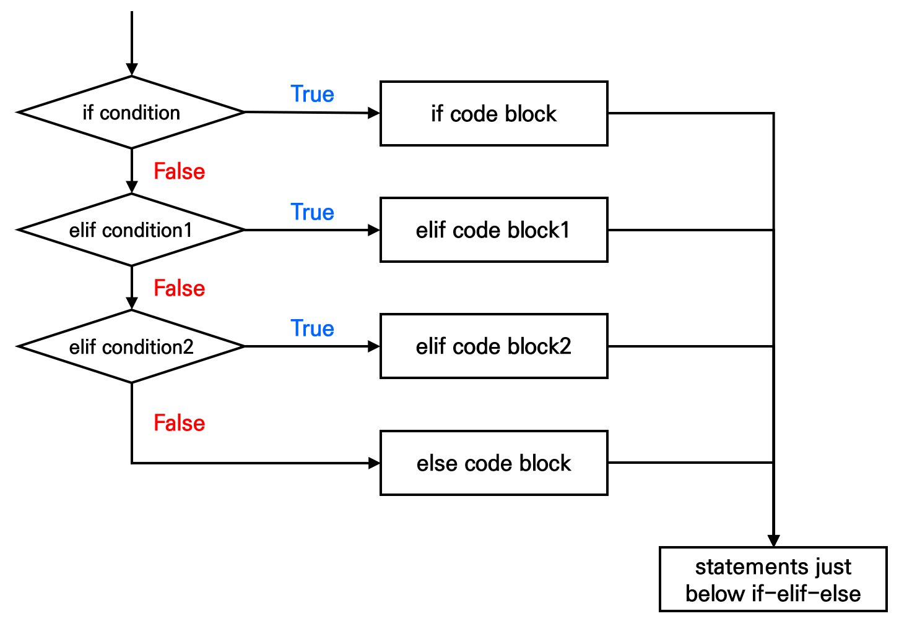
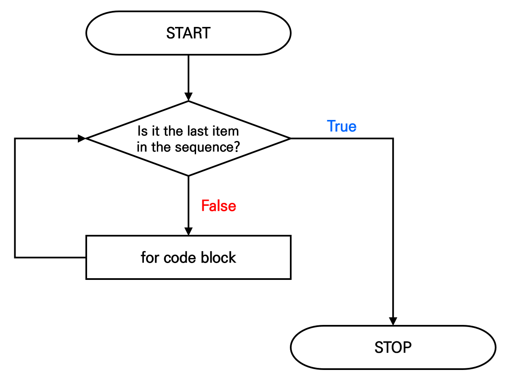
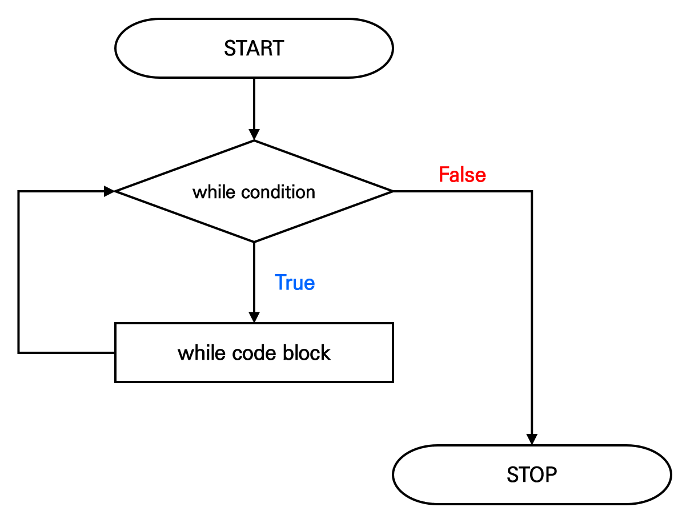

Chapter 4 프로그래밍 구조
4.1 프로그래밍(programming)
- 컴퓨터를 이용해 문제를 해결하기 위해 주어진 절차를 문법에 맞게 작성하는 과정
- 데이터 분석을 진행하다 보면 R에서 제공하는 함수만으로는 해결이 되지 않는 경우가 있으며, 이때 프로그래밍 기법을 활용하면 보다 효율적으로 문제를 해결할 수 있음
4.2 조건문(conditional statement)
- 조건에 따라 특정한 동작을 실행하도록 하는 프로그래밍 명령어

4.2.1 if 문
- 조건이 참(TRUE)이면 코드블록을 실행하고, 거짓(FALSE)이면 코드블록을 실행하지 않고 다음 명령문으로 넘어가는 조건문
- [참고] 코드블록(code block)
- 중괄호
{}로 구분된 코드로, 여러 명령문을 하나로 묶은 실행 단위
- 중괄호
## [1] "Pass"4.2.2 if-else 문
- 조건이 참(TRUE)이면 첫 번째 코드블록을 실행하고, 거짓(FALSE)이면 두 번째 코드블록을 실행하는 조건문
- if-else 문에서 else는 반드시 if 문의 코드블록을 닫는
}와 같은 줄에 작성해야 함
## 시험 점수가 80점 이상이면 합격(Pass), 80점 미만이면 불합격(Fail) 출력
score <- 65
if(score >= 80) {
result <- "Pass"
} else {
result <- "Fail"
}
print(result)## [1] "Fail"4.2.4 else if 문
- 첫 번째 조건이 거짓(FALSE)이면 두 번째 조건을 검사하고, 두 번째 조건이 참(TRUE)이면 해당 코드블록을 실행하는 조건문
- 여러 조건을 순차적으로 검사할 때 사용함
if(조건1) {
조건1이 참일 때 실행할 명령문
} else if(조건2) {
조건1은 거짓이고 조건 2는 참일 때 실행할 명령문
} else if(조건3) {
조건1, 조건2는 거짓이고 조건 3은 참일 때 실행할 명령문
} ... {
} else {
모든 조건이 거짓일 때 실행할 명령문
}## 시험 점수가 90점 이상이면 A학점, 80~90점 미만이면 B학점,
## 70~80점 미만이면 C학점, 60~70점 미만이면 D학점, 60점 미만이면 F학점 출력
score <- 85
if(score >= 90) {
grade <- 'A'
} else if(score >= 80) {
grade <- 'B'
} else if(score >= 70) {
grade <- 'C'
} else if(score >= 60) {
grade <- 'D'
} else {
grade <- 'F'
}
print(grade)## [1] "B"4.3 반복문(repetitive statement)
- 정해진 동작을 반복적으로 수행할 때 사용하는 프로그래밍 명령어
4.3.1 for 문
- 지정된 횟수만큼 반복하여 코드블록을 실행하는 반복문

## [1] "*"
## [1] "*"
## [1] "*"
## [1] "*"
## [1] "*"- [예제] 구구단 2단 출력
print()함수 - 하나의 값을 출력cat()함수 - 한 줄에 여러 개의 값을 결합하여 출력\n- 줄바꿈을 하도록 하는 특수문자
## 2 * 1 = 2
## 2 * 2 = 4
## 2 * 3 = 6
## 2 * 4 = 8
## 2 * 5 = 10
## 2 * 6 = 12
## 2 * 7 = 14
## 2 * 8 = 16
## 2 * 9 = 18- [예제] 1~20 사이의 숫자 중 짝수만 출력
## [1] 2
## [1] 4
## [1] 6
## [1] 8
## [1] 10
## [1] 12
## [1] 14
## [1] 16
## [1] 18
## [1] 20- [예제] 1~100 사이의 숫자의 합계 출력
- 어떤 변수를 계산에서 사용하려면, 그 변수를 먼저 선언해야 함
## [1] 100- [실습] iris 데이터셋에 대하여 꽃잎의 길이(Petal.Length)가 1.6 이하이면 Low, 5.1 이상이면 High, 나머지는 Middle로 분류
4.3.2 while 문
- 조건이 참(TRUE)일 동안 코드블록을 계속 반복 실행하는 명령문
- 조건문과 반복문이 결합한 형태임
※ 주의 : 영원히 실행되는 반복문을 ’무한루프(infinite loop)’라 하며, 컴퓨터의 작동을 멈출 수 있음

## [1] 1004.3.3 break 문와 next 문
- break 문 : 반복문을 중단시키고, 반복문 이후의 첫 번째 명령문으로 이동시킴
- next 문 : 현재 반복을 건너뛰고, 반복문의 시작 지점으로 되돌려 다음 반복을 진행함
## [1] 15## [1] 254.3.4 apply 계열 함수
- 주어진 함수 연산을 특정 단위로 적용할 수 있도록 지원하는 함수
- 반복문을 사용하는 것보다 간결한 코드로 반복 연산을 처리할 수 있음
| 함수 | 설명 |
|---|---|
| apply() | - 행렬이나 배열의 특정 차원(행 또는 열)에 함수를 적용 |
| lapply() | - 리스트 또는 벡터의 각 요소에 함수를 적용하고, 리스트로 반환 |
| sapply() | - lapply()와 비슷하지만, 가능한 경우 결과를 벡터나 행렬로 반환 |
| vapply() | - sapply()와 비슷하지만, 반환값의 형태를 명시적으로 지정함 |
| tapply() | - 집단별로 데이터를 나누어 함수를 적용 - 주로 팩터(factor)와 함께 사용 |
| mapply() | - 여러 입력 벡터에 함수를 병렬로 적용하고 결과를 반환 |
# apply() 예제: 행렬에서 각 열의 평균 계산
apply(iris[, 1:4], 2, mean)
# lapply() 예제: 각 열의 요약 통계량 계산
lapply(iris[, 1:4], summary)
# sapply() 예제: 각 열의 요약 통계량 계산 (벡터로 반환)
sapply(iris[, 1:4], summary)
# vapply() 예제: 각 열의 평균을 숫자로 반환
vapply(iris[, 1:4], mean, numeric(1))
# tapply() 예제: Species별로 Sepal.Length의 평균 계산
tapply(iris$Sepal.Length, iris$Species, mean)
# mapply() 예제: Sepal.Length와 Sepal.Width의 합을 구하는 함수 적용
mapply(sum, iris$Sepal.Length, iris$Sepal.Width)4.4 사용자 정의 함수
- 사용자가 직접 작성하여 필요한 작업을 수행하는 함수
- 코드의 재사용성(reusability), 가독성(readability)을 높임
## 두 개의 값을 입력받아 큰 수를 반환하는 함수
mymax <- function(x, y) {
max.value <- x
if (y > x) {
max.value <- y
}
return(max.value)
}
mymax(10, 20)## [1] 20- 사용자 정의 함수에서도 매개변수의 초기값(default value)을 설정할 수 있음
## 매개변수 x, y를 입력 받아 x/y 값을 반환하는 함수(단, y의 초기값은 2)
mydiv <- function(x, y=2) {
result <- x / y
return(result)
}
mydiv(x = 10, y = 3) # 매개변수 이름과 매개변수 값을 쌍으로 입력
mydiv(10, 3) # 매개변수 값만 입력
mydiv(10) # x에 대한 값만 입력(y 값 생략)- 여러 개의 값을 반환해야 하는 경우에는 이를 리스트로 묶어 반환함
## 매개변수 x, y를 입력 받아 두 변수의 합과 곱을 리스트로 반환하는 함수
myfunc <- function(x, y) {
sum.value <- x + y
mul.value <- x * y
return(list(sum = sum.value, mul = mul.value))
}
result <- myfunc(5, 8)
result$sum # 5, 8의 합
result$mul # 5, 8의 곱